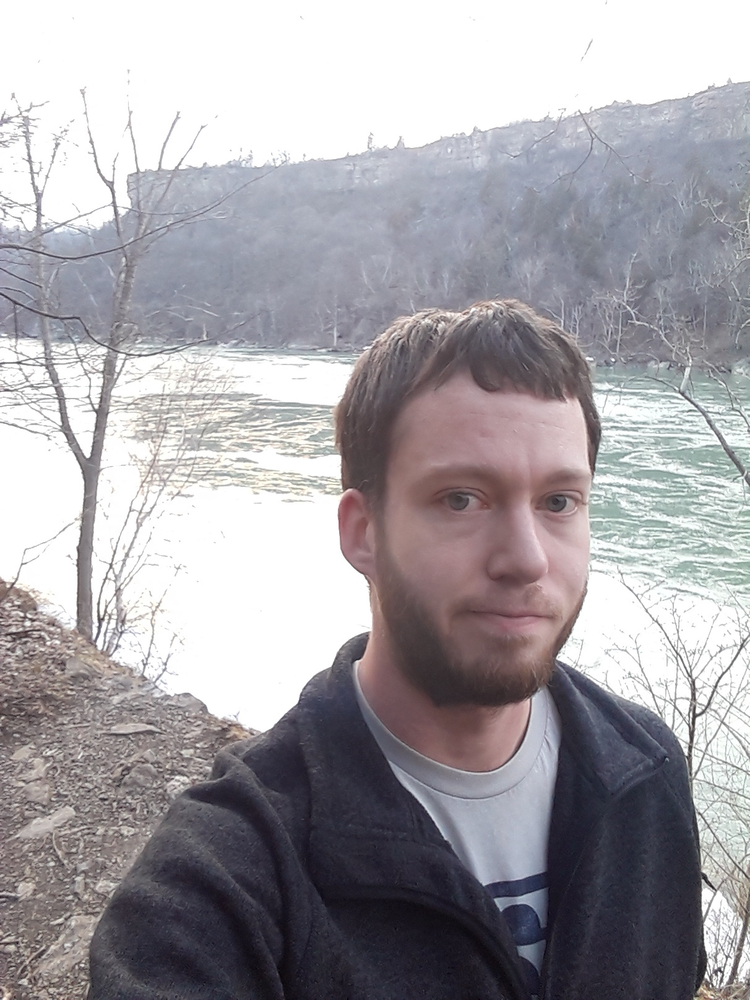
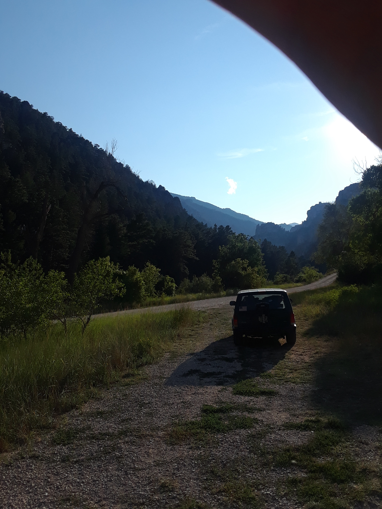
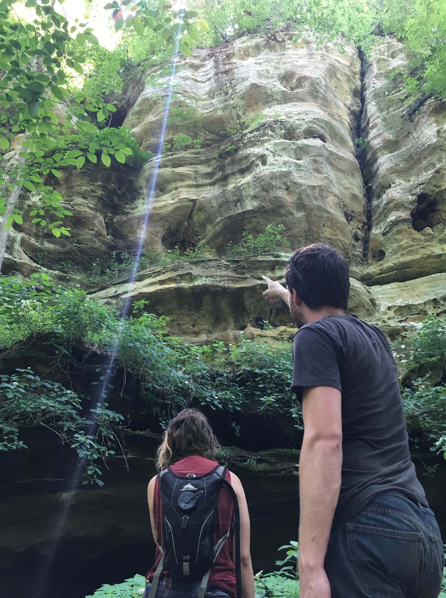

2018 in Review
Winter
Welcome to 2018! This year started in Califormia by visiting Joshua Tree and Lake Isabella. Visiting California was something I had done a bit before in high school, but going through the entire state was an experience all by itself. After visiting various cities in valleys and aroundthe ocean I hiked around Pinnacles National Park (the newest National Park), which is probably my favorite park. It's almost entirely a hikers-only parks, so if you visit bring water and some snacks!
Later on I wanted to visit the TWiT Podcast Studio where I've listen for years (and years) to several podcasts: Security Now and This Week in Tech to name a couple. After the studio visit I drove around San Francisco and walked along the Golen Gate bridge.
California was beginning to linger on after two months in the state. Sure there's more to see, but I was getting restless of being in the state. There's a lot of space outside CA to visit too! So, I crossed state lines into Utah in the far southwestern corner where a town called St. George's, UT resides. This town is set at the foot of a mountain and was under dark storm clouds as I drove in.
Spring
With spring coming I was either tired of traveling so much or stressed about trying to work and explore concurrently. As April arrived I needed yet another change in my life, so I headed back to Iowa over a few days to begin my next phase... I spent a fair amount of the drive back thinking where I wanted to go and settled on Oregon. The area is beautiful, people were nice, and it would be a fresh start someplace new.
Once I decided Oregon was my next spot I started planning how to get out there and knowing I wanted to sell the van I let my parents know I'd be in town and asked to stay. The first week back I sold Dory, purchased a 98 Jeep Cherokee, and found a room to rent in town. Living in the same place took a bit to get used to again, but allowed me an easier work environment. As I reconnected with friends I realized we had drifted apart and our priorities weren't the quite the same.
I've noticed that spending so much time alone and puts you in a different place mentally than most people. I never knew that isolation was terrifying to many people as it's always come naturally to me. I'm unsure if it was more a learned trait in my younger years or just part of who I am, but either way it's allowed me to have the confidence to take risks. With so much great long form content available I hardly noticed days go by without speaking to anyone.
Camping and Jobs
Summer is a fantasitc time to camp and a couple of my friends who have gone many times before wanted to go. I jumped at the option and we planned a trip to the Shawnee National Forest in the southern tip of Illinois. We'd just be gone a few days and take my Jeep -- no problem, right? Wrong. The drive out was uneventful, but rich with chats between the three of us. Once we picked a spot to camp the problems started... After arriving later than we wanted we hurried to pick a spot and setup camp only to find in the morning we had many unexpected ticks crawling over us!
Even as the friend who just spent a year camping I let it lapse to check the site before setting up camp. My mind was in vacation mode and I wanted to setup camp, hang out at a campfire and turn in for some needed sleep after driving. I slept fine, but woke up last and saw my friends scrambling to pick off ticks. After doing the same and reassuring them we "probably" won't get Lyme all of us found a hike to go on after slapping our tents and gear against trees trying to knock loose any last critters.
The road back was not any easier on us and this trip was getting more complicated by the hour. On the way back in Iowa the engine starts to overheat and we have to pull over for the night. In vain attempts to add water and a half jug of coolant I have left gets us to a casino parking lot where we're forced to spend the night. In the morning we can repair the Jeep, but we for sure can't sleep on the side of the interstate. We make it back after nursing the Jeep and a new radiator, but that won't be the end of its problems I run into.
Around the end of summer I'm getting tired of working at Banno and have been looking for a new challenge already. I've grown tired of the situation enough to move on. Quitting gave me an odd feeling as it sealed off that chapter of my life. I worked at Banno for 6 and 1/2 years. The amount of knowledge, experience and self-confidence I gained while there was incredible. I'm thankful for Ben and Wade to give me a chance as an intern and to reinvest that on all the projects since.
Fall
August 2018 was the first month I've ever had since 16 where I didn't have a job. No time to clock in. No meetings scheduled. No due dates. Nothing. That's ten years of working on some level. It felt strange... Free of chains, but also uncomfortable as I had no leads for another job.
I just had one plan -- move out to Oregon and figure something out.
That figuring out took another risk. I knew Wade wanted to start another company like he did Banno and had chatted a couple times with him about it, so I reached out and found out he was interested in taking a step and hiring a developer. After telling him I was driving out to Colorado and could meet him somewhere for an interview we set a date and I camped on the way there. The idea of making an open source banking platform is a really interesting challenge and something we thought possible after. It's called Moov.io and is what we started work on.
Winter
TODO
Best of the year
If you didn't see it during the hurricanes this year there was a new type of visualization for the flood surge that I think will get people to evacuate. There were still 116 deaths in the year and evacuating can cost over $1000 for a family.
On the plus side, imagine getting this video as a warning on your phone over a text message:
This is fantastic. It's a full implementation of Pokemon Red in Minecraft, but it's done by essentially copying it bit for bit into Minecraft's representation. That's not only an accurate way to emulate a game (produce the same output with different steps), but it's the exact input of the game cartridge (memory/storage layout) as well.
Everyone should checkout these last two videos. They offer a view into the possible future world where we have radical medical improvements derived from nature. The studies are promising and small, but over the 2020's there should be a lot more peer-reviewed research published about how the crazy world of plants and fungi can, potentially, solve lots of our major issues.